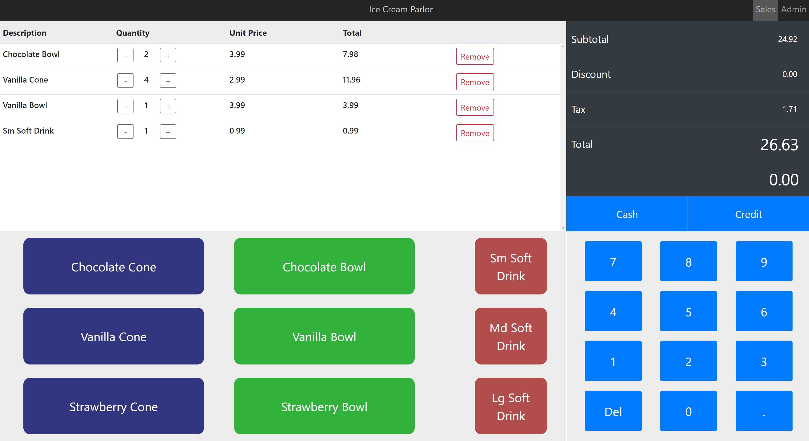
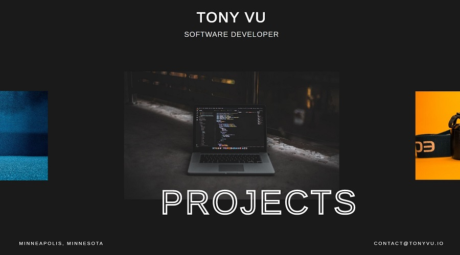

<div class="projects-container">
  <div class="row projects-row">
    <div class="col-md-4" *ngIf="slideIn" [@project1]>
      <mat-card class="project-card">
        <mat-card-header>
          <div mat-card-avatar>
            <i
              class="fab fa-java"
              [ngStyle]="{
                fontSize: '5rem'
              }"
            ></i>
          </div>
          <mat-card-title>Java Spring</mat-card-title>
          <mat-card-subtitle>Angular - MySQL</mat-card-subtitle>
        </mat-card-header>
        
        <mat-card-content>
          <mat-card-title>POS</mat-card-title>
          <mat-card-subtitle>Business Tool</mat-card-subtitle>
          <p class="description">
            This is my most recent project in progress. It is an online POS
            system for a fictional restaurant business. So far, I've completed
            the register UI and it is fully functional. I'm currently working on
            sending completed orders to the database and being able to retrieve
            and display all orders on the admin page. I'm developing the
            frontend with the Angular, Java Spring Boot for the backend, and
            MySQL for the database. The IDE's I'm using are Intellij and VS
            Code.
          </p>
        </mat-card-content>
        <mat-card-actions>
          <button mat-button onClick="window.open('//posjava.herokuapp.com')">
            DEMO
          </button>
          <button mat-button onClick="window.open('//github.com/tonyvu1/pos')">
            CODE
          </button>
        </mat-card-actions>
      </mat-card>
    </div>
    <div class="col-md-4" *ngIf="slideIn" [@project2]>
      <mat-card class="project-card">
        <mat-card-header>
          <div mat-card-avatar>
            <i
              class="fab fa-node-js"
              [ngStyle]="{
                fontSize: '5rem'
              }"
            ></i>
          </div>
          <mat-card-title>Express</mat-card-title>
          <mat-card-subtitle>MongoDB - Bootstrap 4 - EJS</mat-card-subtitle>
        </mat-card-header>
        
        <mat-card-content>
          <mat-card-title>MeetingSpace</mat-card-title>
          <mat-card-subtitle>Online Communication Service</mat-card-subtitle>
          <p class="description">
            This is an online video/chat website I made with ExpressJS, EJS
            templating system, and Bootstrap 4. I used MongoDB for my backend
            database to store user account information, PassportJS middleware
            for login authentication and protected routes, and Heruoku CLI for
            deployment. I implemented and tested various realtime,
            bi-directional communication interfaces such as WebRTC, Socket.IO,
            Firebase, Twilio, and Scaledrone.
          </p>
        </mat-card-content>
        <mat-card-actions>
          <button
            mat-button
            onClick="window.open('//meetingspace-tv.herokuapp.com')"
          >
            DEMO
          </button>
          <button
            mat-button
            onClick="window.open('//github.com/tonyvu1/meetingspace')"
          >
            CODE
          </button>
        </mat-card-actions>
      </mat-card>
    </div>

    <div class="col-md-4" *ngIf="slideIn" [@project3]>
      <mat-card class="project-card">
        <mat-card-header>
          <div mat-card-avatar>
            <i
              class="fab fa-js-square"
              [ngStyle]="{
                fontSize: '5rem'
              }"
            ></i>
          </div>
          <mat-card-title>JavaScript</mat-card-title>
          <mat-card-subtitle>HTML - SASS - PHP</mat-card-subtitle>
        </mat-card-header>
        
        <mat-card-content>
          <mat-card-title>Original</mat-card-title>
          <mat-card-subtitle>Portfolio</mat-card-subtitle>
          <p class="description">
            This was my first portfolio website that I developed with vanilla
            JavaScript, HTML, SASS, and a hint of PHP. I included it in my list
            of projects because it taught me a lot of fundamental lessons about
            web development, such as why it's a good idea to use styling
            frameworks such as Bootstrap to save time on responsive UI
            implementations, basic JS DOM element manipulation for UX, and
            handling form submissions with PHP.
          </p>
        </mat-card-content>
        <mat-card-actions>
          <button
            mat-button
            onClick="window.open('//old-portfolio.000webhostapp.com')"
          >
            DEMO
          </button>
          <button
            mat-button
            onClick="window.open('//github.com/tonyvu1/old-portfolio')"
          >
            CODE
          </button>
        </mat-card-actions>
      </mat-card>
    </div>
  </div>
</div>
